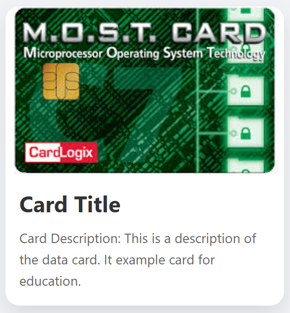

คุณจะต้องสร้างการ์ดข้อมูลพื้นฐานด้วย HTML และจัดสไตล์ด้วย CSS เพื่อให้ดูน่าสนใจและอ่านง่าย โจทย์นี้จะช่วยให้คุณฝึกฝนการใช้งานคุณสมบัติ CSS
พื้นฐานสำหรับการจัดเลย์เอาต์และตกแต่งองค์ประกอบต่างๆ
สิ่งที่โจทย์ต้องการ :
• ตรวจสอบให้แน่ใจว่าการ์ดมีเงา (box-shadow) และขอบมน (border-radius) ที่สวยงาม
• รูปภาพภายใน `card-image` ควรจะแสดงผลเต็มความกว้างของการ์ดและครอบคลุมพื้นที่ที่กำหนด
• เนื้อหาภายใน `card-content` ควรมีระยะห่าง (padding) รอบด้าน 15px
• ข้อความหัวข้อ `card-title` ควรมีสีน้ำเงินเข้ม (#333) และขนาดตัวอักษร 1.5em
• ข้อความคำอธิบาย `card-description` ควรมีสีเทา (#666) และขนาดตัวอักษร 0.9em
